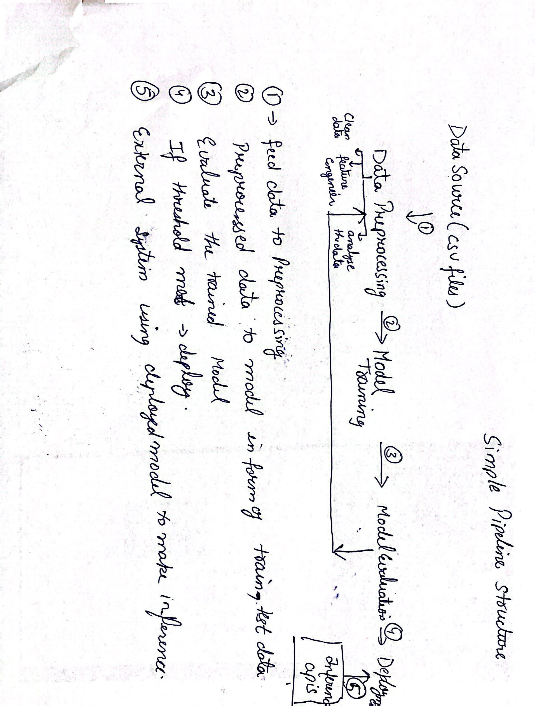

This project is designed to implement a pipleline for a machine learning model which will accept a "csv data file and make prediction on the data and as per accuracy threshold(as of now 95%) model will be saved if achieved accuracy is more than 95%".
The pipeline automates the entire process of loading data, preprocessing it, training a model, evaluating its performance, and optionally deploying it. This automation ensures consistency, reduces manual errors, and allows for easy scalability.
Below is a simple diagram illustrating the flow of operations within the machine learning pipeline:
This script was created to test the "lightgbm" model and understand its functionality. It is not used in the pipeline.
Entry point of the project. It calls the pipeline.py script to initiate the pipeline.
Second entry point handling the pipeline functionality.
Entry point of the pipeline.
Steps:
config.json and environment file parameters.data_ingestion.py to load the data.data_preprocessing.py to preprocess the data.model_training.py to initiate the training process.model_evaluation.py to evaluate the trained model on new data.Methods:
Methods:
Methods:
Methods:
Methods:
A notebook to run each stage of pipelineblock by block to test beforehand
Created a new folder called .streamlit and create a “config.toml” file inside it.
Config added:
Implementation of custom logging system which can log the info, debug, error, exception logs and save the logs upto some days periodically As of now I have used the stremlit write method to display logs
Also, I would like to add early stopping of pipeline if possible by setting up configuration in cofig.json and intructing the pipeline.py script as per thet config. This will give more control over the whole piepline process
So there was a ask about how much time I spent on this. Roughly, I have spent 3 days from the day of receiving and each day I have given around 3.5 hrs.
My most of the time was utilized on EDA notebook liek 50% of the time as data exploration is the key part for any model
Then, I did 10% of the time in project structuring and remaining I have used in pipeline design and all completing all components including html file too.
This is rough estimation as through out the day I was thinking only about how to make this work propely.
I found this project intresting.
This document outlines the operation of a comprehensive machine learning pipeline for predicting loan risks. The documentation ensures that the pipeline can be easily understood and maintained. The pipeline or any software devlopement is always an ongoing process which will need enhancement always This is a very basic work done by me. Hopefully to hear constructive feedback from the team. Thank you